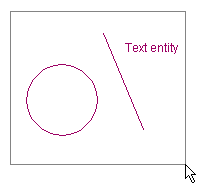
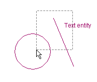
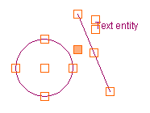
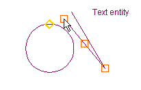
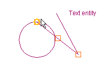

Selecting entities
To select entities click the left mouse button once, move the mouse and click once again. If the mouse is moved from left to right the selection rectangle line will appear continuous. All entities entirely inside the rectangle will be selected.

If the mouse is moved from right to left the selection rectangle line will appear dashed. All entities that cross the rectangle will be selected.

Entities can be added to a selection by clicking on them. Selections may be discarded by either staring a new selection, or pressing the Escape key.
Entity handles
When entities have been selected a number of little squares (called 'handles') appear. The locations of the handles are specific for each entity. Handles may be used for moving, stretching or resizing entities when dragged. If a selection contains more than one entity an additional handle is displayed; it will be the only filled one. This additional handle may be used for moving the entire selection.

Drag and drop editing
When a handle is being dragged the editor will still display the old position of the entity as a reference until the operation is completed. When the handle becomes close to another handle the editor displays a temporary marker to show the function of the closest handle. For example endpoints are denoted with squares, midpoints with triangles, etc.

If the handle being dragged is dropped near another handle the editor will automaticly snap it to the target handle.

The size and color of handles and snap markers, as well as snap distances can be adjusted using the Preferences | Workspace dialog.
See also:
|
Workspace Manager |
» up